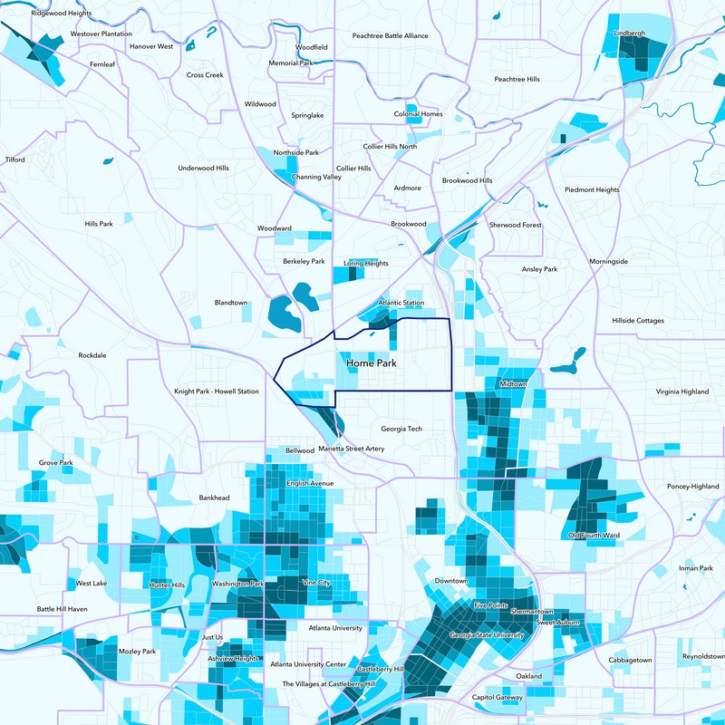

I am a member of Home Park, which is a neighborhood that is near Georgia Tech’s campus. In the past fifteen years Home Park has experienced gentrification and an increases in taxes and rent. This website is meant to explain why Home Park needs to stay “shitty” in order for the community to be able to continue to live here.

A recent graduate put it well:
“Raising the taxes (which are a function of property values) kind of starts an exponential circle of suck kind of increase: the taxes go up to improve the area. Once the area improves, the value goes up. Once the value goes up the taxes are higher (remember, function of value). Once the value/taxes go up, the rent goes up because landlord mortgage payments are way less fluid (think, most people get a 30 year mortgage) and their margins are more or less fixed. Incremental increases like this start to add up faster than the rate of inflation and students like us that really need affordable housing that renting in Home Park provides start to get priced out.” -Reed Clark